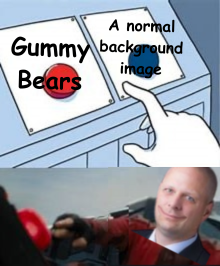
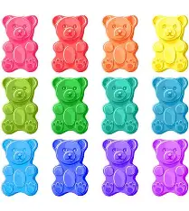

Images are not on the web page, they are linked into the page.
You can adjust the height and width  by using atributes. You can do percent or fixed.
by using atributes. You can do percent or fixed.
Images line up on the bottom left corner of the page. If you want text to wrap around them, use the align atribute.
To make a background image do a background attribute tag in the body tag
 